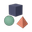
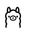

Founder of Eschatia Labs, a non-profit open-source AI lab. Small models that run on a laptop, agents you can inspect, detectors that show their evidence.
Projects
| reevesagents | Run 25 coding CLIs from one tmux, through an MCP, a CLI or a TUI. 109 stars, 1.3k npm downloads a month. |
| xdfdet | Deepfake video detection: eight EfficientNet-B4 checkpoints with Grad-CAM evidence. 976 Hugging Face downloads. |
| tholos | Small AI assistants sharing tables, notes and tasks on your own machine, every action behind a rule. |
| jevalt | Three 4B decision models for English, Turkish and German, calibrated answers in 4 GB of RAM. |
| ultramod | The all-in-one mod pack for Claude Code. 2.2k npm downloads a month. |
Open source
My code ships in rea 6.6.0, Hermes Agent, Claude Code Router, Claude HUD, ccstatusline, claude-swap and  
In review at
11 merged, 6 credited, 20 in review as of 22 October 2026. Every pull request
Research
Explainable deepfake detection with frame-level CNNs: UBMK 2026 paper (accepted) and MSc thesis, TED University, 2025. Read the research